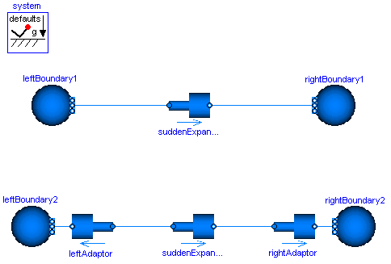

| Name | Description |
|---|---|
| Illustrating a case in which kinetic terms play a major role in the momentum balance |
 Modelica_Fluid.Examples.Explanatory.MomentumBalanceFittings
Modelica_Fluid.Examples.Explanatory.MomentumBalanceFittings
This example shows the use of a sudden expansion / contraction model, which is connected to two boundary conditions prescribing static pressure. Notice that the prescribed static pressure on the right boundary is higher than on the left one. Still, the fluid flows from left to right.
The reason for this is that the boundary conditions model infinite reservoirs with an infinite diameter and thus zero flow velocity. The sudden expansion model does however have two ends with finite diameters, and, as explained in the Overview of the Users' Guide, the momentum balance is not fulfilled exactly for this type of connections. Using a simple connect()-statement, the difference of the kinetic terms is neglected, which is not reasonable in the present model: At the left boundary condition it is zero, and on the left side of the sudden expansion it has a non-zero value. It is not reasonable to neglect it in the shown model, because there is little friction and therefore these kinetic effects dominate. Consequently, only modelling these effects explicitly leads to the correct results.
To do so, two additional sudden expansions / contractions are included in the model. The diameter is set to inf close to the boundaries and the proper values close to the original model. These additional components now introduce exact momentum balances and the results are as expected.
The total pressures offer an additional perspective on the model. After setting the parameter show_totalPressures on the Advanced tab of the AbruptAdaptors to true, the total pressures are included in said models and may be plotted. This allows to confirm that the total pressure always reduces along the flow direction, even in the upper model.

Extends from Modelica.Icons.Example (Icon for an example model). HTML-documentation generated by Dymola Wed Feb 04 15:31:24 2009.